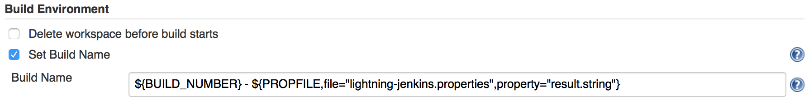
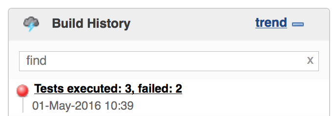
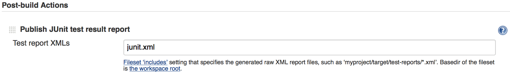
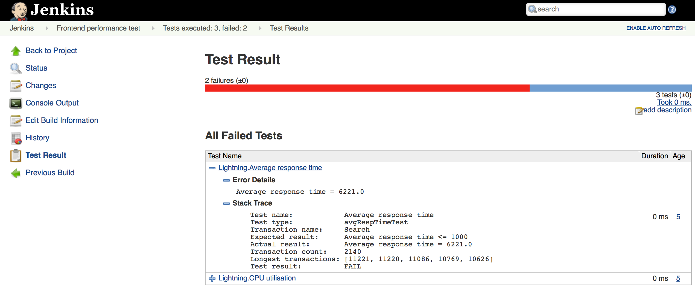

Build status
Exit code produced by Lightning will set build status to passed or failed.
Build name
Lightning produces properties file which is understandable for Jenkins server. You can use this output together with Jenkins Build Name Setter Plugin to display tailored information in build name:
- in
verifymode - number of executed/failed/ignored tests - in
reportmode - number of executed/failed transactions
Required Build Name Setter Plugin configuration:

Build name:

Test report
JUnit XML report produced by Lightning provides insight into particular failures.
Required build configuration:

Test results:

Due to JENKINS-9980, it is not currently possible for Jenkins to detect JUnit XML report generated by Lightning if you configured your build as a Maven Project. As a workaround, you may create Freestyle Project instead.